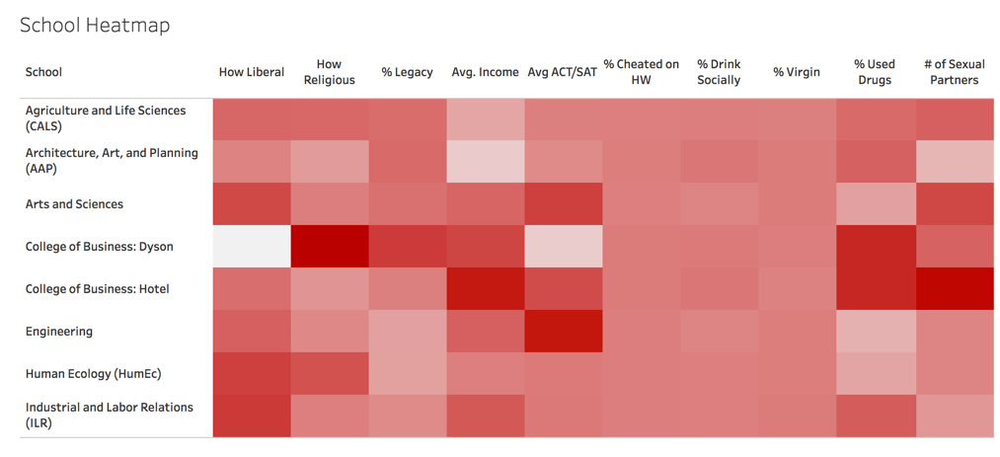
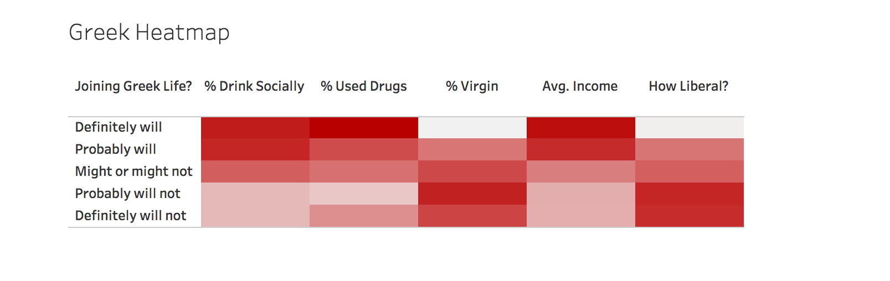

2021 By the Numbers
The color in each cell corresponds to a correlation between the corresponding row representing a category, and column representing a certain question asked. The darker the color, the stronger the correlation. Try comparing vertically between the different categories (race or dorm), rather than horizontally.
Comparisons by College


Stereotypes of Cornell’s undergraduate colleges abound, and one need only look at Cornell’s meme-sharing Facebook group to learn as much. Seeing as these stereotypes probably are far too ingrained in Cornell culture to be tossed aside, it is perhaps better to identify the data that confirm those stereotypes: Take a look at the most and least liberal colleges, the top two colleges in average household income (which are also the same top two in drug use) and the college with the lowest average ACT/SAT score. But it must be said: Not all of our stereotypes can be confirmed. Take a look at the ACT/SAT rankings to see why.
Comparisons by Dorm

Whether through deliberate building design, loitering spirits, self-fulfilling prophecies, simple randomness or otherwise, some Cornell dormitories appear to attract similar students from year to year. Mary Donlon Hall, for instance, tends to be known as a party dorm, one frequently marked on Friday and Saturday nights by the presence of an ambulance. With that in mind, take a look at our data: Donlon occupants are least likely to be virgins, are most likely to have used drugs and are among the top three dorms in social drinking.
But the suggestion that Donlon Hall comprises a group of individuals all with minds set on partying is not supported by the data. Indeed, according to the data, many Donloners have another hobby: cheating on homework.
Which students are more likely to join Greek Life?


This heatmap, unlike the ones above, clearly supports more stereotypes than it disturbs. It strongly suggests that people who are interested in joining Greek life drink more, use more drugs, are less likely to be virgins, have higher incomes and are less liberal. Interestingly though, the group that is least likely to have used drugs, most likely to comprise virgins and most likely to be liberal is the “probably will not” group. This means that, in general, the “definitely will not” group possesses more "Greek qualities" than the “probably will not” group, a rather curious observation.